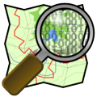

2. Software and Data Source Overview¶

pgRouting is a community project of OSGeo.
This workshop uses several free and open source softwares for geospatial tools. Most of these softwares are related to other open source software projects. Here we mention the most important ones.
2.1. pgRouting Overview¶

pgRouting extends the PostGIS / PostgreSQL geospatial database to provide geospatial routing functionality.
Advantages of the database routing approach are:
Data and attributes are stored on a PostreSQL database and as such they can be modified can be modified by many clients.
Data changes can be reflected instantaneously through the routing engine. There is no need for pre-calculation.
The “cost” parameter can be dynamically calculated through SQL and its value can come from multiple fields or tables.
Some of the pgRouting library core features are:
pgRouting is an open source software available under the GPLv2 license and is supported and maintained by the pgRouting community.
pgRouting is part of OSGeo Community Projects under OSGeo Foundation. It is included on OSGeoLive.
- Check it out on OSGeoLive:
2.2. osm2pgrouting Overview¶

osm2pgrouting is a command line tool that imports OpenStreetMap data into a pgRouting database. It builds the routing network topology automatically and creates tables for feature types and road classes. osm2pgrouting was primarily written by Daniel Wendt and is now hosted on the pgRouting project site.
osm2pgrouting is available under the GPLv2 license.
2.3. OpenStreetMap Overview¶

OpenStreetMap is an incredible data source for pgRouting because it has no technical restrictions in terms of processing the data. Data availability still varies from country to country, but the worldwide coverage is improving day by day. In its own words:
OpenStreetMap (OSM) is dedicated to creating and providing geographic data, such as street maps, worldwide, for free.
Most maps considered ‘free’ actually have legal or technical restrictions on their use. These restrictions hold back anyone from using them in creative, productive or unexpected ways, and make every map a silo of data and effort.
OpenStreetMap uses a topological data structure:
Nodes are points with a geographic position.
Ways are lists of nodes, representing a polyline or polygon.
Relations are groups of nodes, ways and other relations which can be assigned certain properties.
Properties can be assigned to nodes, ways or relations and consist of
name = valuepairs.
- Website: